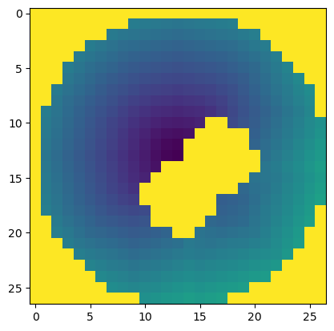

Accessible Volumes#
Accessible volumes are the sterical allowed conformation spaces. Accessible volumes computed in IMP used Dijkstra’s algorithm for finding the shortest paths between the attachment node and surface accessible points around the attachment node. For a given starting node (label site) the AV is the shortest path between that node and every other node (see: path search)
IMP accessible volume decorator#
First, create an IMP model, root particle, and a root Hierarchy. The AV decorator finds all sampled particles as leaves of a root particle and uses IMP.em.SampledDensityMap to sample the position of obstacles on a grid. Thus, the Hierarchy is IMP.atom.Hierarchy and obstacles should have a IMP.core.XYZR and a IMP.atom.Mass decorator (For atoms in a biomolecule this is already the case).
[1]:
import IMP
import IMP.core
import IMP.atom
import IMP.algebra
import IMP.bff
[2]:
m = IMP.Model()
root_p = IMP.Particle(m)
root_hier = IMP.atom.Hierarchy(root_p)
Place obstacles
[3]:
r = 5.0
w = 1.5
xyzs = [
[[0, 0, 0], 0, w],
[[0, 5, 0], r, w],
[[5, 0, 0], r, w],
[[0, 5, 5], r, w]
]
obstacles = list()
for xyz, r, w in xyzs:
pi = IMP.Particle(m)
IMP.atom.Mass.setup_particle(pi, w)
IMP.core.XYZR.setup_particle(pi, IMP.algebra.Sphere3D(xyz, r))
root_hier.add_child(IMP.atom.Hierarchy.setup_particle(pi))
obstacles.append(pi)
IMP.bff.ProbeAccessibleVolumeDecorator decorator#
An AV decorated particle has a source particle (usually the attachment site of the label). The `IMP.atom.Hierarch`` root of the source particle is used to find the obstacles.
[4]:
source_p = obstacles[0]
av_p = IMP.Particle(m)
av = IMP.bff.ProbeAccessibleVolumeDecorator.setup_particle(m, av_p, source_p)
When the position of particles changes, the AV should be resampled.
[5]:
av.resample()
Tile feature#
The most important attributes of tiles are the penalty and the cost of visiting a tile (from the starting point). Additionally, a tile has a density, e.g., used to implement weighted accessible volumes and a set of other (user-defined) features that are stored in a dictionary. The density / and path length from the source to a grid point are accessed by the IMP.bff.ProbeAccessibleVolumeDecorator.map attribute.
[6]:
path_map = av.map
[9]:
bounds = 0.0, 30
tile_penalty = path_map.get_tile_values(IMP.bff.PM_TILE_PENALTY, (0, 1))
tile_cost = path_map.get_tile_values(IMP.bff.PM_TILE_COST, bounds)
tile_density = path_map.get_tile_values(IMP.bff.PM_TILE_COST_DENSITY, bounds)
[10]:
#%%
# These features are returned as 3D arrays.
import pylab as plt
layer = 14
plt.imshow(tile_cost[layer])
plt.show()

[8]:
try:
import ipyvolume
ipyvolume.quickvolshow(tile_density)
except ModuleNotFoundError:
# ipyvolume renders the volume in a notebook; it is a
# viewer, not a dependency of IMP.bff, and everything
# above works without it.
print('ipyvolume is not installed -- skipping the view')
/opt/tljh/user/envs/dev/lib/python3.9/site-packages/numpy/core/getlimits.py:499: UserWarning: The value of the smallest subnormal for <class 'numpy.float32'> type is zero.
setattr(self, word, getattr(machar, word).flat[0])
/opt/tljh/user/envs/dev/lib/python3.9/site-packages/numpy/core/getlimits.py:89: UserWarning: The value of the smallest subnormal for <class 'numpy.float32'> type is zero.
return self._float_to_str(self.smallest_subnormal)
/opt/tljh/user/envs/dev/lib/python3.9/site-packages/ipyvolume/serialize.py:92: RuntimeWarning: invalid value encountered in true_divide
gradient = gradient / np.sqrt(gradient[0] ** 2 + gradient[1] ** 2 + gradient[2] ** 2)
[9]:
av.has_attribute(IMP.FloatKey("linker_length"))
print(av.get_av_key(0))
print(av.get_is_optimized(IMP.FloatKey("linker_length")))
"linker_length"
False
[10]:
av.set_av_parameters_are_optimized(True)
print(av.get_is_optimized(IMP.FloatKey("linker_length")))
True
[11]:
m.get_model_objects()
[11]:
["rigid bodies list",
"P5",
"P4",
"P2",
"normalize rigid bodies",
"P3",
"P1",
"P0"]
[12]:
m.get_attribute(IMP.FloatKey("linker_length"), av)
[12]:
20.0
[ ]:
IMP.bff.ProbeAccessibleVolumes()
[ ]: